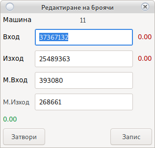

Справки

Справки за големи периоди от време, могат да накарат програмата за зависне.
Просто изчакайте докато информацията се обработи.
Всяка справка се отваря в свой собствен таб, генерирайки таблица с нужната информация
Възможно е генериране на графика. За генериране на графика се уверете, че опцията Цял Екран e изключена.

Може да сортирате всяка таблица, кликайки върху името на колоната. При графика, премахнете излишните линии от легендата намираща се в дясно.
Изберете нужната справка от ляво.
Изберете на чална и крайна дата.
Използвайте опциите за филтриране и фина настройка.
Натиснете Генерирай.
Отворения нов таб съдържа нужната информация.
Клиенти

Може да видите цялото име на настройката като задържите мишката върху името.
Спечелени бонуси
Справка за всички бонуси спечелени от клиент чрез системата за бонусиране.
Не показва Бонус Карти
Изплатен Мъни Бек
Справка за всички изплащания на Мъни Бек
Отпечатани талони
Справка за всички отпечатани талони за томбола включително свободно отпечатаните
Вход/Изход
Справка за направени входове и изходи през кешлес система
Статистика
Статистика на цялата игра на клиент за определения период
Банкови преводи
Справка за пари преминали през ATM терминал
Количество карти
Статистика за броя на картите притежавани от клиент
Натрупан мънибек
Количеството мъни бек бонус натрупан от клиент
Пари по карта
Пари които клиента има в неговата карта.
Точки в пари
Точките могат да работят като талони за томбола или да се изплащат в пари.
Разходни ордери
Разходни касови ордери разпечатани от програмата. Необходим е POS принтер
Не се използва календар
Справката е за всички налични карти
Възможно забавяне при голямо количество карти, моля изчакайте
Машини
IN, OUT, Тотал
Справка за реализацията на машините по електронни броячи.
Генериран Бил
Показва била генериран от машината
Справка Възвръщаемост
% на възвръщаемост на машините.
За правилна работа въведете броячите WON и BET при инициализация.
Механичен IN, OUT, Тотал
Справка за реализацията на машините по механични броячи.
Отчети
Справка за всички направени отчети за ДКХ и разходни касови ордери
Изберете тип и дата
Използвайте Двоен Клик за отваряне на отчета

За поправка на отчет използвайте двоен клик

Възможни грешки при редакция на Месечен Отчет.
Вход / Изход
Тази справка ще покаже всяко влагане и вадене на пари от машината. Машините пазят последните 50 - 100 влагания/тегления. На сървъра се пазят всички останали.
SMIB Лог
Справка за грешки генерирани от SMIB контролерите
Изисква:
Активна опция да изпращане на лог към сървър
Ремонт на машина
Справка за всички извръшени ремонти от Сервиз
Нулирани машини
Справка за нулирани машини от Сервиз
Крупиета
Трансфери
Вътрешни трансфери на пари между различни потребители
Погледни Трансфери
Изваден бил
Показва колко и на кои машини е бил изваден бил.
Погледни:
Изваждане на бил при отчет и изваждане на бил в смяна
Липси
Справка за зачислени и изплатени липси
Отчетени пари
Сумата която крупието е отчело след край на смяна
Приходи
Справка за всички приходи различни от вход на машините
Разходи
Справка за всички разходи различни от изход на машините
Лог файл
Записва всички действия на крупие (Отворена врата на бил, Отворена централна врата, рестартиран SMIB и др.)
Бонус карти
Всички бонус карти поставени от крупие
Вход/Изход по карта
Справка за изплатени и добавени пари в кешлес системата
Изисква активен кешлес
Работно време
Показва броя на отработените часове.
Джакпот
Избирате начална и крайна дата. Използвайте бутона Генерирай.
Информацията се взима от сървъра за джакпот и изисква стабилна мрежова връзка.
Не пускайте справка за големи периоди от време, може да забави работата на джакпот сървъра или ще бъде невъзможно прехвърлянето на информацията.
Печат
Отпечатва справката на принтер
Изисква настроен принтер или PDF четец
Изпраща справка по E-Mail на собственика.
Изисква настроен e-mail адрес
Експорт
Експортира справката в Microsoft excel таблица с формат xlsx. Необходимо е да имате инсталиран офис пакет за да я видите след експорта